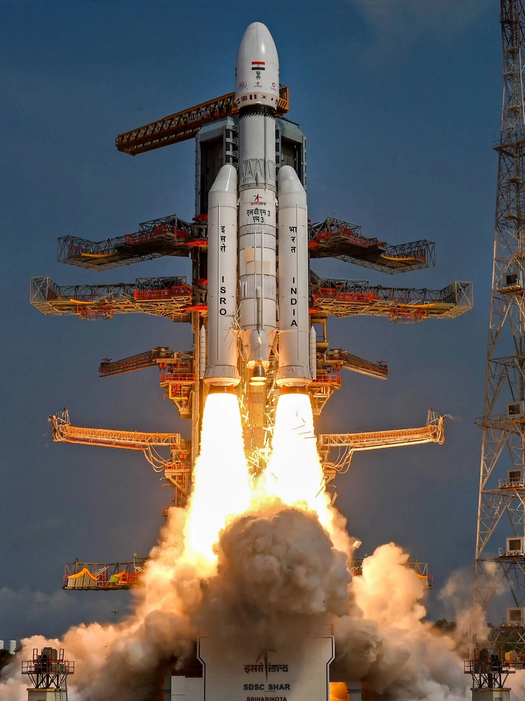

India's most ambitious lunar mission yet — land on the Moon, collect samples, and bring them back to Earth. Only the USA, USSR, and China have done this. India will be the fourth. The samples from the south pole terrain that Chandrayaan-3 explored will finally come home.
Watch: Chandrayaan-3 Soft LandingChandrayaan-4 is India's first lunar sample return mission — the most technically demanding class of planetary mission ever attempted. The goal: land on the Moon near the south pole region explored by Chandrayaan-3, collect approximately 3 kg of lunar regolith (soil and rock samples), and return them safely to Earth for laboratory analysis.
Only three entities have successfully returned samples from the Moon: the USSR's Luna programme (1970–1976), NASA's Apollo programme (1969–1972), and China's Chang'e-5 (2020). India will attempt to be the fourth — and the first to return samples from the scientifically priceless south pole terrain.
The mission requires two LVM3 launches — the spacecraft is too massive and complex for a single launch. Stack 1 carries the Transfer Module (TM) + Re-entry Module (RM). Stack 2 carries the Propulsion Module (PM) + Descender Module (DM) + Ascender Module (AM). The two stacks dock in Earth orbit before the combined spacecraft departs for the Moon. The docking technology was proven by SpaDeX in early 2025 — specifically to enable Chandrayaan-4.
Chandrayaan-4's architecture is unlike any previous ISRO mission. The spacecraft consists of five distinct modules that work together to accomplish the round-trip to the Moon — two launched separately, docked in Earth orbit, then sent together.
Chandrayaan-3's Pragyan rover detected sulfur, measured temperatures, and confirmed the south pole's ancient age — all with instruments weighing kilograms. Earth's laboratories contain instruments that weigh tonnes and have sensitivity many orders of magnitude higher. A single gram of lunar soil analysed on Earth yields more information than years of rover data.
The south pole samples are especially valuable because they may contain water ice billions of years old — preserved in permanently shadowed craters at −230°C. These samples could contain the most ancient material in the solar system — pre-dating the formation of Earth. Analysing them will reveal how water arrived in the inner solar system and whether it could support human lunar bases.
Chandrayaan-4 is not a separate programme — it is a direct continuation. The Descender Module is built on Chandrayaan-3's Vikram lander design, incorporating all lessons from the 2023 landing. Chandrayaan-2's orbiter mapped the terrain. Chandrayaan-3's Pragyan identified the mineralogy. Chandrayaan-4 will collect the physical evidence.
The Chandrayaan-2 Propulsion Module's return to Earth orbit in 2023 was not incidental — it was a direct demonstration of the orbital mechanics needed for Chandrayaan-4's return journey. Every mission in India's lunar programme has been building toward this one.